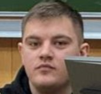

Контактная информация
Тел.: +7 (3812) 325-98-22
E-mail: vm.omsk@museum.ru
Адрес: 644000, Омск, ул. Ленина, д. 10
Директор Виртуального музея Омской области
Виртуальный музей Омской области – это современный цифровой проект, направленный на сохранение и популяризацию культурного наследия региона...

Заместитель директора по инновационному развитию и цифровым технологиям
Основная цель заместителя – сделать музей доступным каждому...
Контактные отдела
Выставочный отдел: +7 (3812) 56-78-94, exhibits@vmuseum-omsk.ru
Научно-исследовательский отдел: +7 (3812) 56-78-95, research@vmuseum-omsk.ru
Культурные мероприятия: +7 (3812) 56-78-96, events@vmuseum-omsk.ru